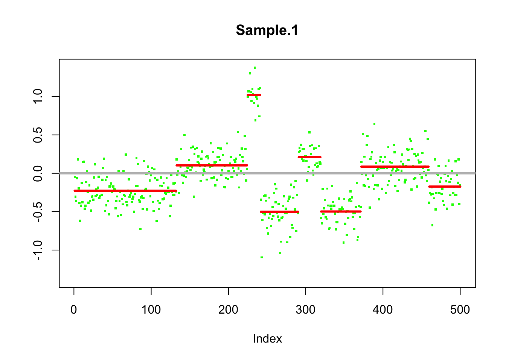
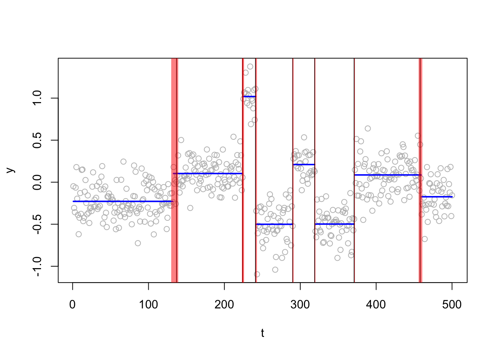
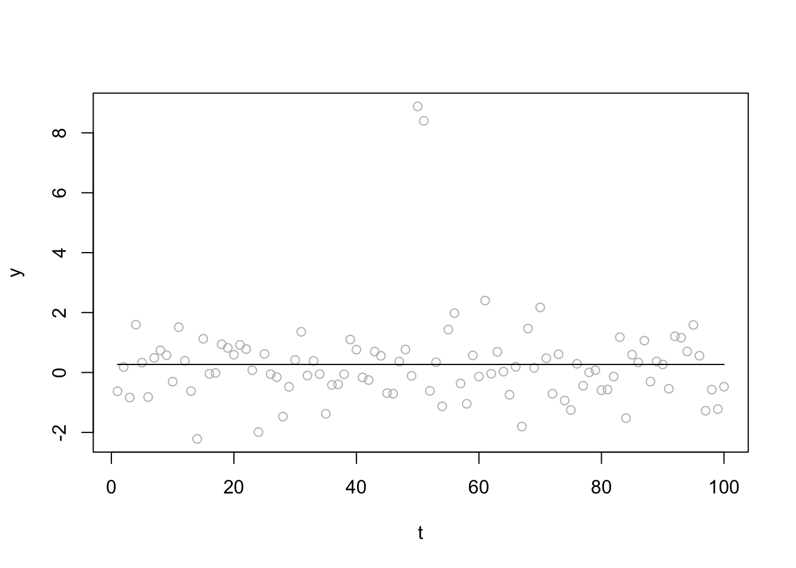
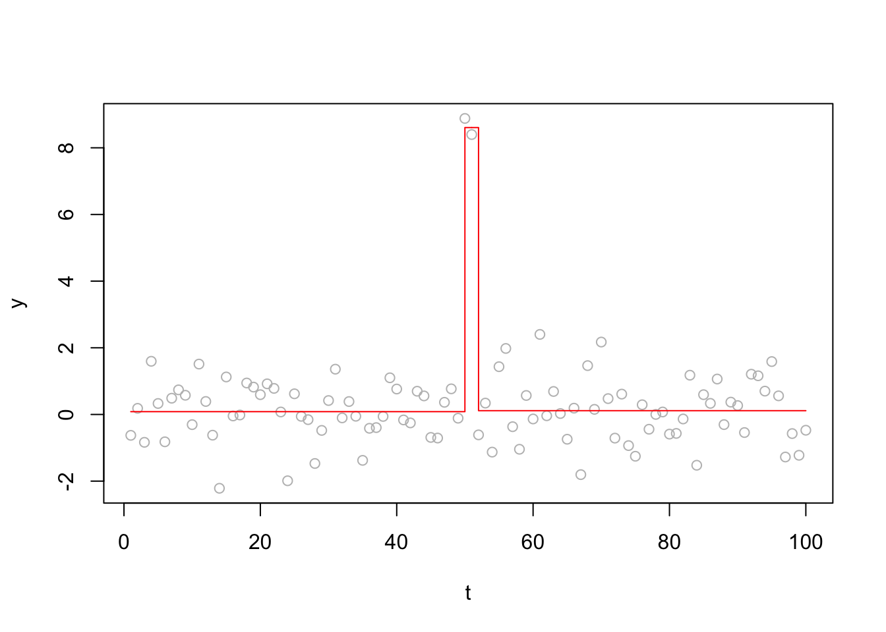
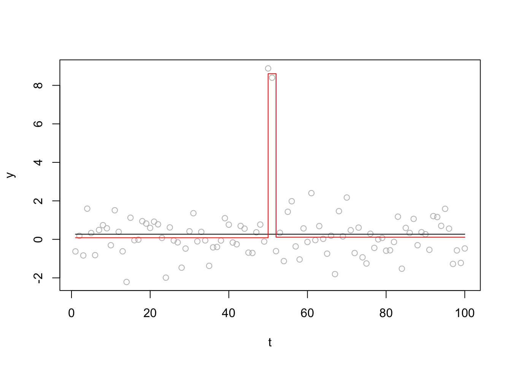

Last updated: 2018-11-15
workflowr checks: (Click a bullet for more information) ✔ R Markdown file: up-to-date
Great! Since the R Markdown file has been committed to the Git repository, you know the exact version of the code that produced these results.
✔ Environment: empty
Great job! The global environment was empty. Objects defined in the global environment can affect the analysis in your R Markdown file in unknown ways. For reproduciblity it’s best to always run the code in an empty environment.
✔ Seed:
set.seed(20180414)
The command set.seed(20180414) was run prior to running the code in the R Markdown file. Setting a seed ensures that any results that rely on randomness, e.g. subsampling or permutations, are reproducible.
✔ Session information: recorded
Great job! Recording the operating system, R version, and package versions is critical for reproducibility.
✔ Repository version: a77d98f
wflow_publish or wflow_git_commit). workflowr only checks the R Markdown file, but you know if there are other scripts or data files that it depends on. Below is the status of the Git repository when the results were generated:
Ignored files:
Ignored: .DS_Store
Ignored: .Rhistory
Ignored: .Rproj.user/
Ignored: analysis/.Rhistory
Untracked files:
Untracked: analysis/cp_init_locs.Rmd
Untracked: analysis/null.Rmd
Untracked: analysis/test.Rmd
Untracked: data/geneMatrix.tsv
Untracked: data/liter_data_4_summarize_ld_1_lm_less_3.rds
Untracked: data/meta.tsv
Untracked: docs/figure/cp_init_locs.Rmd/
Untracked: docs/figure/test.Rmd/
Untracked: sim_cp.pdf
Unstaged changes:
Modified: analysis/changepoint.Rmd
| File | Version | Author | Date | Message |
|---|---|---|---|---|
| Rmd | a77d98f | stephens999 | 2018-11-15 | workflowr::wflow_publish(“analysis/susie-paper.Rmd”) |
library("susieR")
library("DNAcopy")
library("changepoint")Loading required package: zoo
Attaching package: 'zoo'The following objects are masked from 'package:base':
as.Date, as.Date.numericSuccessfully loaded changepoint package version 2.2.2
NOTE: Predefined penalty values changed in version 2.2. Previous penalty values with a postfix 1 i.e. SIC1 are now without i.e. SIC and previous penalties without a postfix i.e. SIC are now with a postfix 0 i.e. SIC0. See NEWS and help files for further details.This is the simulated example from ?DNAcopy::segment (note we changed this into a single problem (single chromosome) whereas the example was originally split into two chromosomes).
set.seed(51)
genomdat <- rnorm(500, sd=0.2) +
rep(c(-0.2,0.1,1,-0.5,0.2,-0.5,0.1,-0.2),c(137,87,17,49,29,52,87,42))
chrom <- rep(1,500)
maploc <- c(1:500)
test2 <- DNAcopy::segment(CNA(genomdat, chrom, maploc))Analyzing: Sample.1 plot(test2)
genomdat.s = susieR::susie_trendfilter(genomdat,0)
plot_cs = function(s){
CS = s$sets$cs
for(i in 1:length(CS)){
rect(min(CS[[i]]),-5,max(CS[[i]])+1,5,col = rgb(1,0,0,alpha=0.5),border=NA)
}
}
plot(genomdat,col="gray",ylab="y",xlab="t")
segments(x0=test2$output$loc.start,x1=test2$output$loc.end,y0=test2$output$seg.mean,col="blue",lwd=2)
abline(v=cumsum(c(137,87,17,49,29,52,87))) # changepoint locations
plot_cs(genomdat.s)
Report CSs and compare with true locations
genomdat.s$sets$cs$L1
[1] 130 131 132 133 134 136 137 138
$L2
[1] 241 242
$L3
[1] 371
$L4
[1] 456 458 459 460
$L5
[1] 223 224 225
$L6
[1] 224
$L7
[1] 319
$L8
[1] 290cumsum(c(137,87,17,49,29,52,87))[1] 137 224 241 290 319 371 458We set up a simple simulated example with two change points very close together.
set.seed(1)
x = rnorm(100)
x[50:51]=x[50:51]+8
x.s = susie_trendfilter(x,0,L=2,estimate_prior_variance=TRUE)
plot(x,col="gray",ylab="y",xlab="t")
lines(predict(x.s),type="s")
susie_get_objective(x.s)[1] -181.835Now try initializing susie at the “truth”
s0 = susie_init_coef(c(49,51),coef_value = c(8,-8),p=100)
x.s2 = susie_trendfilter(x,0,s_init=s0,estimate_prior_variance=TRUE)
plot(x,col="gray",ylab="y",xlab="t")
lines(predict(x.s2),col=2,type="s")
susie_get_objective(x.s2)[1] -148.2176plot(x,col="gray",ylab="y",xlab="t")
lines(predict(x.s),type="s")
lines(predict(x.s2),col=2,type="s")
sessionInfo()R version 3.5.1 (2018-07-02)
Platform: x86_64-apple-darwin15.6.0 (64-bit)
Running under: OS X El Capitan 10.11.6
Matrix products: default
BLAS: /Library/Frameworks/R.framework/Versions/3.5/Resources/lib/libRblas.0.dylib
LAPACK: /Library/Frameworks/R.framework/Versions/3.5/Resources/lib/libRlapack.dylib
locale:
[1] en_US.UTF-8/en_US.UTF-8/en_US.UTF-8/C/en_US.UTF-8/en_US.UTF-8
attached base packages:
[1] stats graphics grDevices utils datasets methods base
other attached packages:
[1] changepoint_2.2.2 zoo_1.8-4 DNAcopy_1.55.0 susieR_0.6.2.0390
loaded via a namespace (and not attached):
[1] workflowr_1.1.1 Rcpp_1.0.0 lattice_0.20-35
[4] digest_0.6.18 rprojroot_1.3-2 R.methodsS3_1.7.1
[7] grid_3.5.1 backports_1.1.2 magrittr_1.5
[10] git2r_0.23.0 evaluate_0.12 stringi_1.2.4
[13] whisker_0.3-2 R.oo_1.22.0 R.utils_2.7.0
[16] Matrix_1.2-14 rmarkdown_1.10 tools_3.5.1
[19] stringr_1.3.1 yaml_2.2.0 compiler_3.5.1
[22] htmltools_0.3.6 knitr_1.20 This reproducible R Markdown analysis was created with workflowr 1.1.1